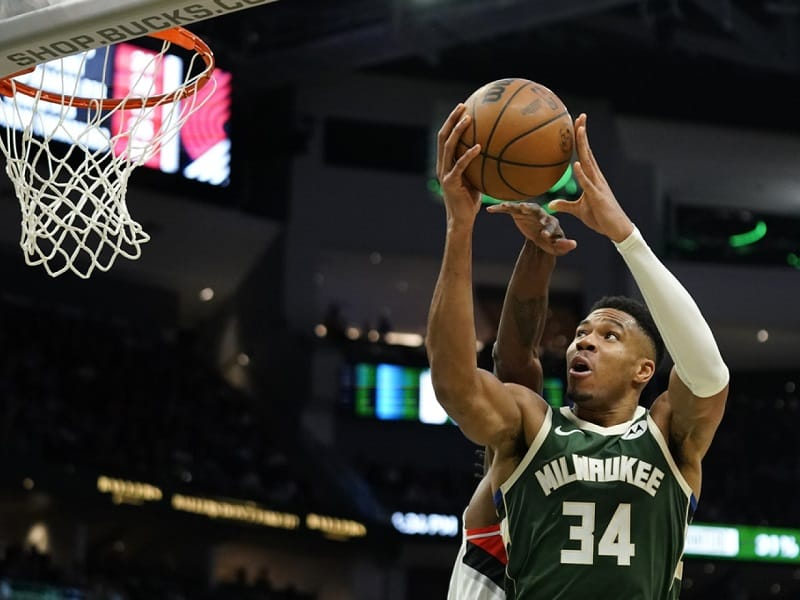

Giannis Antetokounmpo tâm sự sau màn ngược dòng thần sầu của Bucks
'Á thần' cảm thấy vui vì chiến tích đáng nhớ, nhưng anh không muốn Bầy Hươu lặp lại tình trạng này.
Milwaukee Bucks vẫn chưa thay đổi được thói quen nhập cuộc chậm chạp. Ở màn so tài với Portland Trail
Blazers, họ ghi ít hơn đối phương 5 điểm trong hiệp 1 và 11 điểm trong hiệp 2. Vào đầu hiệp 3, khoảng cách
được nâng lên thành 26 điểm.
Nhưng nhờ nỗ lực phi thường, Bucks đã đảo ngược tình thế. Đoàn quân của HLV Adrian Griffin kết thúc trận đấu
với tỷ số 108-102. Đây là màn lội ngược dòng ấn tượng nhất tính từ đầu mùa giải NBA 2023/24 đến nay.
Giannis Antetokounmpo đưa Bucks vươn lên dẫn trước vào cuối hiệp 4
Tại đây
Antetokounmpo sắm vai người hùng của Bầy Hươu với 33 điểm, 16 rebound và 6 kiến tạo. “Á thần Hy Lạp” (106)
cũng vượt qua huyền thoại Kareem Abdul-Jabbar về số lần đạt 30 điểm, 10 rebound và 5 kiến tạo trở lên cho
Bucks. Sau trận, anh chia sẻ:
“Đôi khi chúng tôi tự làm khó chính mình. Chúng tôi không nên để bị dẫn 26 điểm rồi mới cố gắng trở lại và
giành chiến thắng. Điều đó gây tổn hại cho thể trạng của chúng tôi. Nhưng dù sao tôi cũng rất vui vì chúng
tôi đã giành phần thắng. Tôi tự hào về các đồng đội, họ đã giữ được sự tự tin.
Chúng tôi phải biết tự chịu trách nhiệm. Chúng tôi không được để bị tụt lại 26 điểm, chúng tôi phải khiến
đối thủ xin hội ý lần đầu tiên, chúng tôi phải ra sân và làm chủ bản thân trong năm phút đầu tiên.

Trung phong 28 tuổi muốn Bucks cải thiện
Toàn đội có thể làm được điều đó. Tôi yêu cầu bản thân cũng như đồng đội, ban huấn luyện, tất cả mọi người
phải thể hiện ở đẳng cấp cao. Chẳng hạn, tôi sẽ nói với đồng đội rằng lần sau khi trận đấu bắt đầu, chúng ta
phải chơi tốt ngay lập tức.”
Antetokounmpo lý giải về chiến thắng trước Blazers:
“Từ sau lần hội ý ở hiệp 3, chúng tôi đã khiến họ cảm thấy không thoải mái. Chúng tôi buộc họ phải đấu một
chọi một, bởi vì khi đổi hướng tấn công thì phải chơi một chọi một. Chúng tôi đã tập trung phòng thủ, mọi
người đều di chuyển và thi đấu mạnh mẽ.”
Highlights Milwaukee Bucks vs Portland Trail Blazers